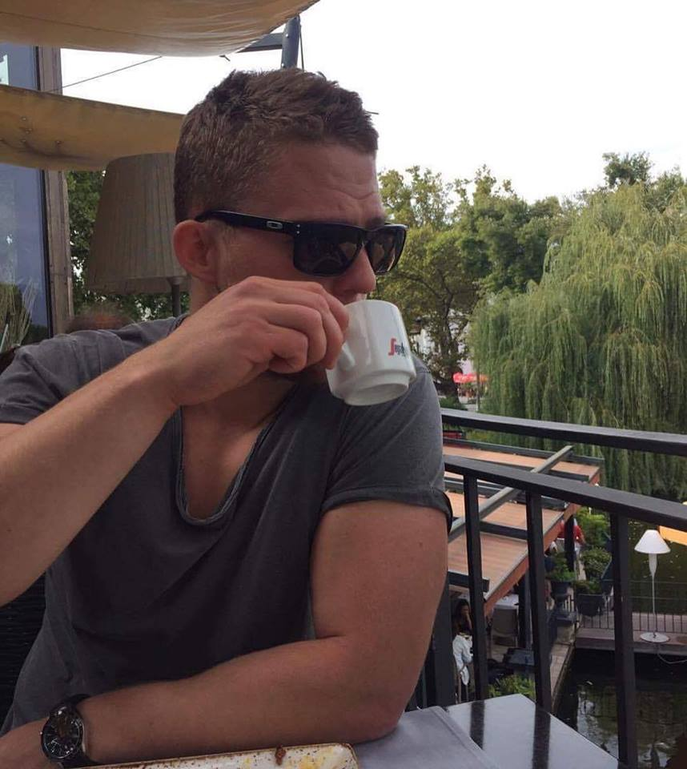

About Me

I have recently completed a full-time MSc Biomechanics degree at the University of Loughborough and I am now keen to launch a career in the exciting world of information technology.
Employability Skills
IT proficiencies: MATLAB, VICON, Nexus, BodyBuilder, Dartfish, Skillspector, Kistler Bioware, Excel, HTML, Java, CSS, MySQL, Continuous Integration
Strong numerical and computer skills
Full EU driving licence
Fluent in English and Hungarian
Education
Loughborough University, Sport, Exercise and Health Sciences, Loughborough, UK
Master of Science in Biomechanics
Specialization: Motion Capture and Computer Simulation
Final Year Project: The temporal profile of the kinematic differences between deceptive and non-deceptive maneuvers
Courses: Motion Capture, Theoretical Biomechanics, Computer Simulation, Statistics, Neuromuscular Function
University of Brighton, Sport, Exercise and Health Sciences, Brighton, UK
Bachelor of Science in Sport Science
Volunteered as a research assistant for Micro Scooters UK to advertise a healthier way of commuting for schoolchildren
Final Year Project: The effects of two potentiating stimuli on the sprint start and vertical jump performance in resistance trained males
Work Experience
GB Rowing - Caversham, UK
Biomechanics and Performance Analysis Intern
Provided biomechanics and performance analysis feedback for the British Rowing team including the Olympic Squad
Worked with a multidisciplinary team to enhance sporting performance and troubleshooted computer based analytical software
Helped Great Britain to win 3 gold medals and a bronze during the 2016 World Championships in Rotterdam
Sport Brighton - Brighton, UK
Strength and Conditioning Coach
Contributed to the success of elite BUCS athletes and military recruits in competition and selection process
Hapoel Ironi Rishon Lezion - Rishon Lezion, Israel
Professional Footballer
Took part in the organization of a pre-season summer training camp held in Budapest, Hungary
Established effective self-motivation and time management strategies while studying for finals away from college
Learnt to listen to feedback and accept criticism to improve my own performance
Maccabi Tel Aviv FC - Tel Aviv, Israel
Professional Footballer
Moved to Israel at the age of 17 to pursue a career in professional football
Learnt to speak conversational level Hebrew and became independent at an early age
Thrived as a member of a team and learnt the importance of maintaining excellent working relationship with the staff and board